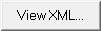
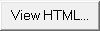

> Learning the Graphical User Interface (GUI) >
The Tool Panel >
ML Viewer
3.3.5. ML Viewer
When you click  or  in the Tool Panel, the watAGE ML Viewer Application dialog box is opened, displaying the current bookshelf in XML or HTML, respectively.